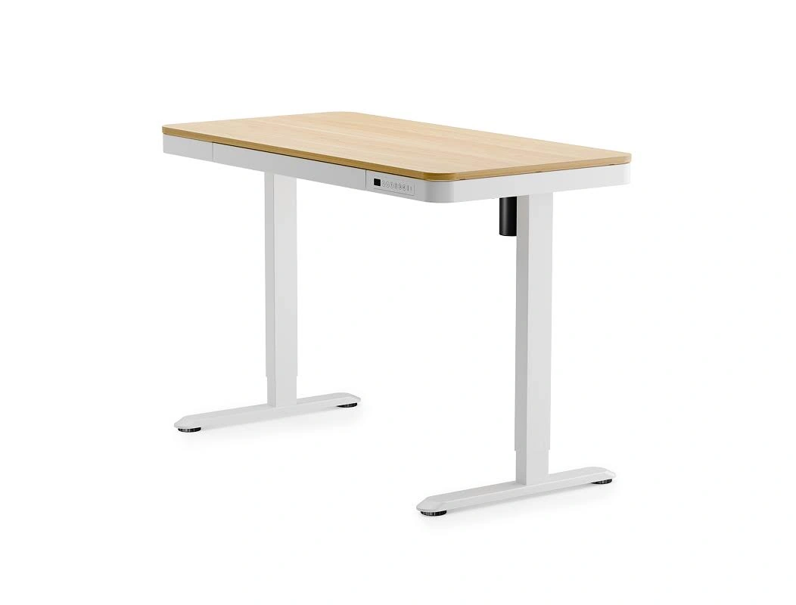

FLEX-GOOG-066

FLEX-GOOG-066FLEX-GOOG-066 · FlexiSpot · Google · 真实广告内的图像组件（非完整广告版式）
品牌 / 平台：FlexiSpot / Google。A类真实广告。图像性质：真实广告内的图像组件（非完整广告版式）。范围：升降桌核心或使用场景。
图片像素：1052×800，比例263:200。文件：01_Original_Competitor_Ads/FlexiSpot/Google/FLEX-GOOG-066.webp。
原广告来源。广告记录：FLEX-GAD-066。日期证据：详情日期与德国地区已核验。首次：2024-11-26；最后：2026-10-14。首次/最后边界不表示连续投放。
视觉描述
FlexiSpot 的纯产品展示素材，前方三分之四，全景。主产品包围框占画面面积粗估约45–65%，主体在中，焦点为桌板、抽屉及桌脚。画面为白、浅木配色，均匀棚拍光。无人物或设备。文字位置：无。主要表达小空间适用、产品细节。
背景复杂度：低。留白：图内无文字时可借鉴其无遮挡主体，后续重新安排留白。主体包围框面积的人工粗估区间，含桌脚间空白，不是像素测量。
人物：无完整使用人物。交互：由桌面物件、桌高或部位关系表达使用；不从静帧推断运动性能。真实感判断：布景或棚拍感较强；是否真实摄影/渲染未做鉴定。
创意类型：产品展示型。卖点：小空间适用、产品细节。
创意逻辑与需求
用无遮挡完整轮廓降低产品识别成本。竞品抽屉不可以移植到无抽屉的 Furniwell 型号。
购买需求：小空间适用、产品细节相关的选择与使用疑问；这是需求匹配推断，不是广告转化证明。
可借鉴与变化
参考什么：原图的前方三分之四、全景与“桌板、抽屉及桌脚”的关系。用无遮挡完整轮廓降低产品识别成本。竞品抽屉不可以移植到无抽屉的 Furniwell 型号。
如何改变：将基础轮廓展示改为两种用途之一：小房间尺度解释，或一体板连续书写；选择门口全景或桌边俯拍，并加入相应动作。至少改变空间、任务和景别，不能只换背景色。
匹配产品：Economy Solid 白色 120×60 cm。
不照搬：Logo、品牌配色系统、评价/星级、获奖/认证、价格/保证、专有结构与未经核验功能；不得把竞品图片直接改标发布。
文字说明：标题/正文合计短摘录最多25词；纯图文内容见原图。未读取的标题/正文不补写。